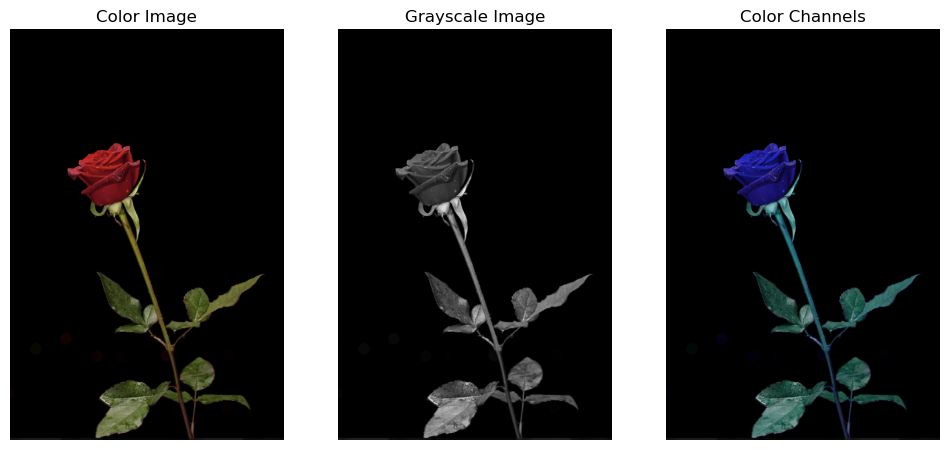
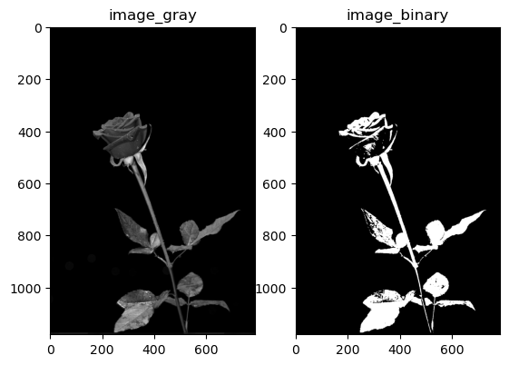
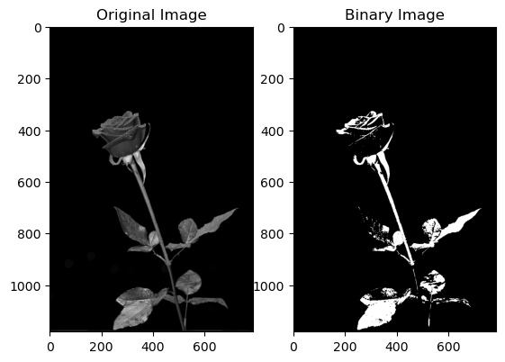
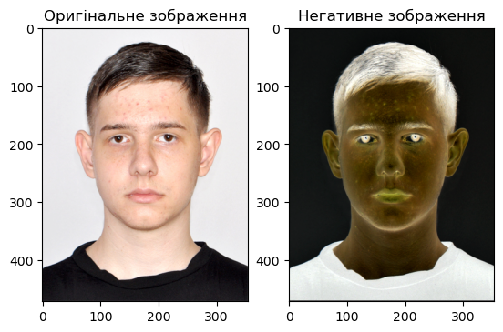
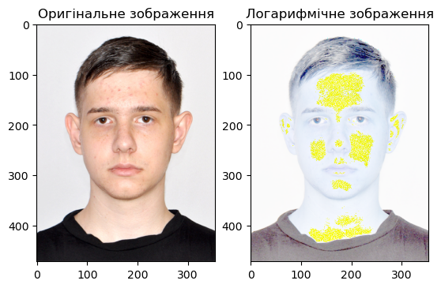
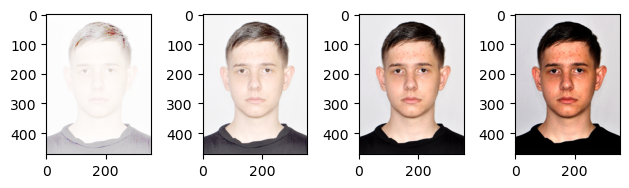
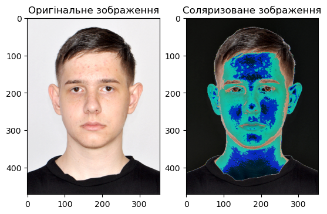
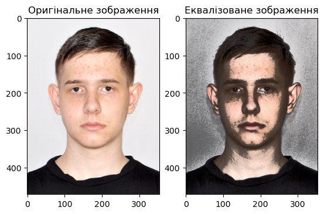
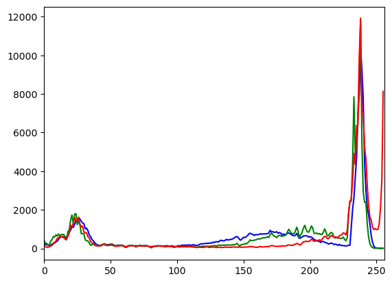

Code
# Імпортуємо пакети
import cv2 as cv
import numpy as np
import matplotlib.pyplot as plt
# print(f'version cv2: {cv.__version__}')
print('version cv2: %s' % cv.__version__)version cv2: 4.10.0Мета: знайомство з поелементними і гістограмними просторовими методами обробки зображень засобами OpenCV у середовищі Anaconda із застосуванням Jupyter Notebook засобами мови програмування Python.
Попередньо потрібно опрацювати лекцію 10.
Градаційні перетворення задаються функцією перетворення інтенсивностей \(s = T(r)\), де \(T()\) - оператор перетворення для околу 1x1, тобто функція.
Наведемо деякі приклади.
# Імпортуємо пакети
import cv2 as cv
import numpy as np
import matplotlib.pyplot as plt
# print(f'version cv2: {cv.__version__}')
print('version cv2: %s' % cv.__version__)version cv2: 4.10.0# # імпортуємо RGB-зображення
# image = cv.imread('image/rose.png')
# print(f'image shape/dimentions: {image.shape}')
# print(f'image number of pixel: {image.size}')
# # розділяємо зображення на канали
# red, green, blue = cv.split(image)
# # формуємо напівтонове зображення
# image_gray = cv.imread('rose.png', 0)
# print(f'grey image shape/scale: {image_gray.shape}')
# print(f'grey image number of pixel: {image_gray.size}')
# # візуалізуємо зображення
# cv.imshow('color image', image)
# cv.waitKey(0)
# cv.destroyAllWindows()
import cv2 # Імпорт бібліотеки OpenCV для роботи з зображеннями.
import matplotlib.pyplot as plt # Імпорт підмодуля pyplot з бібліотеки Matplotlib для візуалізації.
# Зчитуємо зображення з файлу "image/rose.png" за допомогою OpenCV.
image = cv2.imread('orig_images/rose.png')
# Виводимо розміри (ширина, висота, кількість каналів) зображення.
print(f'image shape/dimensions: {image.shape}')
# Виводимо загальну кількість пікселів у зображенні.
print(f'image number of pixels: {image.size}')
# Розділяємо зображення на окремі канали (червоний, зелений, синій).
red, green, blue = cv2.split(image)
# Зчитуємо зображення у відтінках сірого.
image_gray = cv2.imread('orig_images/rose.png', cv2.IMREAD_GRAYSCALE)
# Виводимо розміри напівтонового зображення.
print(f'grey image shape/scale: {image_gray.shape}')
# Виводимо загальну кількість пікселів у напівтоновому зображенні.
print(f'grey image number of pixels: {image_gray.size}')
# Візуалізуємо зображення засобами Matplotlib.
# Створюємо фігуру Matplotlib для розміщення графіків.
plt.figure(figsize=(12, 6))
# Перший графік - кольорове зображення.
plt.subplot(1, 3, 1)
# Виводимо кольорове зображення, конвертуючи його з BGR в RGB для Matplotlib.
plt.imshow(cv2.cvtColor(image, cv2.COLOR_BGR2RGB))
plt.title('Color Image') # Додаємо заголовок графіку.
plt.axis('off') # Вимикаємо відображення координатних вісей.
# Другий графік - напівтонове зображення.
plt.subplot(1, 3, 2)
# Виводимо напівтонове зображення в градаціях сірого.
plt.imshow(image_gray, cmap='gray')
plt.title('Grayscale Image') # Додаємо заголовок графіку.
plt.axis('off') # Вимикаємо відображення координатних вісей.
# Третій графік - окремі канали.
plt.subplot(1, 3, 3)
# Виводимо кольорове зображення, використовуючи окремі канали.
plt.imshow(cv2.merge([red, green, blue]))
plt.title('Color Channels') # Додаємо заголовок графіку.
plt.axis('off') # Вимикаємо відображення координатних вісей.
# Відображення усіх графіків.
plt.show()image shape/dimensions: (1180, 786, 3)
image number of pixels: 2782440
grey image shape/scale: (1180, 786)
grey image number of pixels: 927480
Суть бінаризації напівтонового зображення полягає у трансформації восьмибітного зображення у двобітне. Засобами openCV це можна зробити наступним чином.
# Візуалізація за допомогою matplotlib
# plt.imread('rose.png')
plt.gray()
# plt.subplot(111)
# plt.imshow(image_gray)
# plt.title('Gray Image')
# plt.show()
# plt.savefig('Gray_image.png')
def image_gray_binary(image_input, threshold=50):
# Бінаризація зображення
image_output = image_input.copy()
for row in range(0, image_input.shape[0]):
for column in range(0, image_input.shape[1]):
if image_input[row, column] <= threshold:
image_output[row, column] = 0
else:
image_output[row, column] = 255
return image_output
image_binary = image_gray_binary(image_gray)
# Побудова і вивід зображення у файл
plt.subplot(121)
plt.imshow(image_gray)
plt.title('image_gray')
plt.subplot(122)
plt.imshow(image_binary)
plt.title('image_binary')
# plt.savefig('image_binary.png')
plt.show()
Завдання для самостійної роботи.
Альтернативний варіант з використанням методу бінарної класифікації можна реалізувати так.
# # Вводимо поріг бінаризації:
# T = int(input('Введіть поріг бінаризації: '))
# r, threshold = cv.threshold(image_gray, T, 255, cv.THRESH_BINARY)
# # r - поріг бінаризації
# cv.imshow('image_gray', threshold)
# cv.waitKey(0)
# cv.destroyAllWindows()
# # Запис зображення на диск
# cv.imwrite('image_binary.png', threshold)
# Аб за допомогою такої конструкції
# img = cv.imread('grey_for_binary.png',0)
# cv.imshow('image',img)
# k = cv.waitKey(0)
# if k == 27: # wait for ESC key to exit
# cv.destroyAllWindows()
# elif k == ord('s'): # wait for 's' key to save and exit
# cv.imwrite('image_2.png',img)
# cv.destroyAllWindows()
import matplotlib.pyplot as plt
# Вводимо поріг бінаризації:
T = int(input('Введіть поріг бінаризації: '))
# Використання функції threshold OpenCV для бінаризації зображення.
# Зверніть увагу, що у Matplotlib для відтінків сірого немає необхідності вказувати другий параметр r.
threshold = cv.threshold(image_gray, T, 255, cv.THRESH_BINARY)[1]
# Візуалізація зображення та його бінаризованої версії.
plt.subplot(121)
plt.imshow(image_gray, cmap='gray')
plt.title('Original Image')
plt.subplot(122)
plt.imshow(threshold, cmap='gray')
plt.title('Binary Image')
# Показуємо графіки.
plt.show()
# Зберігаємо бінаризоване зображення на диск.
cv.imwrite('image_binary.png', threshold)Введіть поріг бінаризації: 70
TrueПеретворення зображення в негатив з яскравостями у діапазоні [0,L-1] здійснюється за допомогою наступного перетворення: s = (L - 1) - r де L - 1 це максимальна можлива яскравість пікселя, r це яскравість пікселя який перетворюємо
import cv2
import matplotlib.pyplot as plt
# Read an image
img_bgr = cv2.imread('orig_images/i_image.jpg', 1)
plt.subplot(121)
plt.imshow(cv2.cvtColor(img_bgr, cv2.COLOR_BGR2RGB))
plt.title('Оригінальне зображення')
# get height and width of the image
height, width, _ = img_bgr.shape
for i in range(0, height - 1):
for j in range(0, width - 1):
# Get the pixel value
pixel = img_bgr[i, j]
# Negate each channel by
# subtracting it from 255
# 1st index contains red pixel
pixel[0] = 255 - pixel[0]
# 2nd index contains green pixel
pixel[1] = 255 - pixel[1]
# 3rd index contains blue pixel
pixel[2] = 255 - pixel[2]
# Store new values in the pixel
img_bgr[i, j] = pixel
# Display the negative transformed image
plt.subplot(122)
plt.imshow(img_bgr)
plt.title('Негативне зображення')
plt.show() 
Для логарифмічного перетворення формулою є: s = c * log(1 + r) де с - константа, r - яскравість пікселя
import cv2
import numpy as np
import matplotlib.pyplot as plt
# Read an image
image = cv2.imread('orig_images/i_image.jpg')
# Apply log transformation method
c = 255 / np.log(1 + np.max(image))
log_image = c * (np.log(image + 1))
# Specify the data type so that
# float value will be converted to int
log_image = np.array(log_image, dtype = np.uint8)
# Display both images
plt.subplot(121)
plt.imshow(cv2.cvtColor(image, cv2.COLOR_BGR2RGB))
plt.title('Оригінальне зображення')
plt.subplot(122)
plt.imshow(log_image)
plt.title('Логарифмічне зображення')
plt.show() C:\Users\2dens\AppData\Local\Temp\ipykernel_5224\3263399714.py:9: RuntimeWarning: divide by zero encountered in log
log_image = c * (np.log(image + 1))
C:\Users\2dens\AppData\Local\Temp\ipykernel_5224\3263399714.py:13: RuntimeWarning: invalid value encountered in cast
log_image = np.array(log_image, dtype = np.uint8)
Для степеневого перетворення використовується формула s = crɣ де ɣ є параметром, що визначає інтенсивність корекції
import cv2
import numpy as np
import matplotlib.pyplot as plt
# Open the image.
img = cv2.imread('orig_images/i_image.jpg')
pl = 141
# Trying 4 gamma values.
for gamma in [0.1, 0.5, 1.2, 2.2]:
# Apply gamma correction.
gamma_corrected = np.array(255*(img / 255) ** gamma, dtype = 'uint8')
plt.subplot(pl)
plt.imshow(cv2.cvtColor(gamma_corrected, cv2.COLOR_BGR2RGB))
pl += 1
plt.tight_layout()
plt.show()
Для соляризації формула співпадає з негативом, тобто s = (L - 1) - r, але перетворення відбувається тільки якщо яскравість пікселя більше заданої
import cv2
import matplotlib.pyplot as plt
# Read an image
img_bgr = cv2.imread('orig_images/i_image.jpg', 1)
plt.subplot(121)
plt.imshow(cv2.cvtColor(img_bgr, cv2.COLOR_BGR2RGB))
plt.title('Оригінальне зображення')
# get height and width of the image
height, width, _ = img_bgr.shape
solar = int(input("Введіть коефіцієнт соляризації (0-255): "))
for i in range(0, height - 1):
for j in range(0, width - 1):
# Get the pixel value
pixel = img_bgr[i, j]
# Negate each channel by
# subtracting it from 255
# 1st index contains red pixel
if pixel[0] >= solar:
pixel[0] = 255 - pixel[0]
# 2nd index contains green pixel
if pixel[1] >= solar:
pixel[1] = 255 - pixel[1]
# 3rd index contains blue pixel
if pixel[2] >= solar:
pixel[2] = 255 - pixel[2]
# Store new values in the pixel
img_bgr[i, j] = pixel
# Display the negative transformed image
plt.subplot(122)
plt.imshow(cv2.cvtColor(img_bgr, cv2.COLOR_BGR2RGB))
plt.title('Соляризоване зображення')
plt.show()Введіть коефіцієнт соляризації (0-255): 200
Гістограма цифрового зображення f(x,y), інтенсивності якого змінюються в діапазоні [0,L-1], є дискретною функцією \[h(r_k)=n_k\] де rk - це k-те значення інтенсивності, а nk - загальна кількість пікселів в f з інтенсивністю rk. Аналогічно, нормалізована гістограма цифрового зображення f(x,y) це \[p(r_k)=\frac{h(r_k)}{MN}=\frac{n_k}{MN}\] де M та N - це розміри зображення (відповідно рядки та стовпці). Загальноприйнятою практикою є ділення кожного компонента гістограми на загальну кількість пікселів для його нормалізації.
Оскільки p(rk) - це ймовірність появи заданого рівня інтенсивності rk в зображенні, сума всіх компонентів дорівнює 1.
# import Opencv
import cv2
import matplotlib.pyplot as plt
# Read the astrophoto
image = cv2.imread('orig_images/i_image.jpg')
# Convert to HSV color space
hsv_image = cv2.cvtColor(image, cv2.COLOR_BGR2HSV)
# Split the HSV channels
h, s, v = cv2.split(hsv_image)
# Equalize the V (Value) channel
v_equalized = cv2.equalizeHist(v)
# Merge the HSV channels back, with the equalized V channel
hsv_image = cv2.merge([h, s, v_equalized])
# show image input vs output
plt.subplot(121)
plt.imshow(cv2.cvtColor(image, cv2.COLOR_BGR2RGB))
plt.title('Оригінальне зображення')
plt.subplot(122)
plt.imshow(cv2.cvtColor(hsv_image, cv2.COLOR_HSV2RGB))
plt.title('Еквалізоване зображення')
plt.show()
Гістограми необхідні для візуалізації розподілу значень кольорів у зображені
import numpy as np
import cv2 as cv
from matplotlib import pyplot as plt
img = cv.imread('orig_images/i_image.jpg')
assert img is not None, "file could not be read, check with os.path.exists()"
color = ('b','g','r')
for i,col in enumerate(color):
histr = cv.calcHist([img],[i],None,[256],[0,256])
plt.plot(histr,color = col)
plt.xlim([0,256])
plt.show()
Створити Notebook-документ <lab_3_StudentLastName> за допомогою Jupyter Notebook або Jupyter Lab. (Див. тут, тут і тут).
Відобразити в робочому документі (“зошиті” ipython) виконання пунктів 1-6 наведених нижче, скориставшись інтерактивними посиланнями на відповідну документацію. В якості зображення використати власний портрет, отриманий за допомогою цифрової камери
Робочий документ оформити у вигляді Notebook-документу (файл .ipynb).
Дати відповіді на контрольні запитання.
Скомпілювати звіт у форматі .html. Для цього необхідно завантажити термінал і у командному рядку запустити наступну команду:
jupyter nbconvert lab_3_StudentLastName.ipynb --to html або за допомогою Qurto:
quarto preview lab_3_StudentLastName.ipyn
lab_3_StudentLastName.ipynb та lab_1_StudentLastName.html